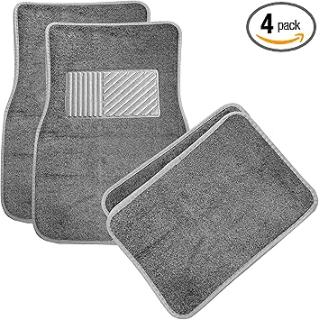
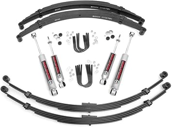

← scoutaccessories.com
The Truth About Scoutaccessories in 2026
May 2026
Finding good scoutaccessories shouldn't require hours of research. Yet in 2026, the sheer number of options makes it harder than it should be.
Must-Have vs Nice-to-Have
- Build quality — Cheap scoutaccessories fall apart fast. Look for solid construction and quality materials.
- Warranty — Real warranty coverage (1+ year) signals a manufacturer that stands behind their product.
- Brand track record — Established scoutaccessories brands have more to lose from bad products. That accountability matters.
Standout Options
→ #1 — Affordable International Scout II Terra Traveler Front Rear Bumper Set 1971 — Highly reviewed
→ #2 — 4719 Rear Liftgate Tailgate Lift Supports Shocks Struts Arms Prop Rod Dampe — Best seller
→ #3 — Mile Marker 481 Pair of Premium Manual Locking Hubs fits 1942-1971 CJ Unive — Top rated

→ #4 — Parking Brake Pedal Foot Pad For 1971-1980 International Harvester Scout II — Fan favorite

→ #5 — Stacool 60PCS 2026 Upgraded Tire Repair Rubber Nail Kit with 4 Sizes Fast S — Highly reviewed
Practical Advice
- Amazon's return policy removes most of the risk when buying scoutaccessories you haven't seen in person.
- Between two options? Go with the one that has more reviews. Volume of feedback matters for scoutaccessories.
- Set price alerts on your top picks. scoutaccessories prices can drop 30-40% without warning.
- The 3-star reviews are gold. They're usually the most balanced and honest takes on scoutaccessories.
Our Take
2026 has brought quality scoutaccessories options at every price point. See our complete guide for current recommendations.
Affiliate Disclosure: As an Amazon Associate, we earn from qualifying purchases. This doesn't affect our recommendations.